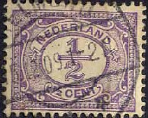
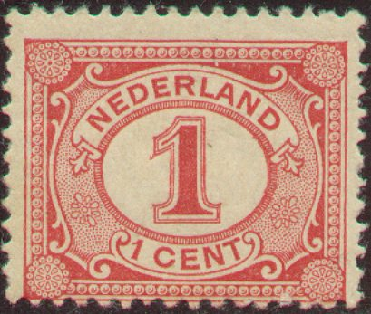
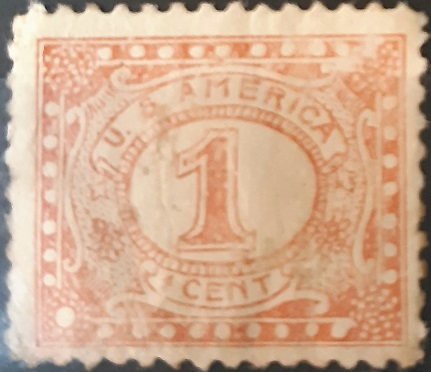
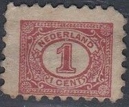
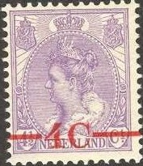
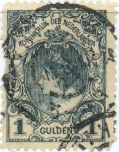
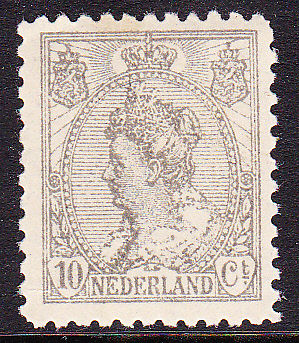

Return To Catalogue - Netherlands 1852-1871 - Netherlands 1872-1897 - Netherlands 1907-1920
Note: on my website many of the
pictures can not be seen! They are of course present in the
catalogue;
contact me if you want to purchase it.
For issues of the Netherlands from before 1898 click here.




1/2 c lilac 1 c red 1 1/2 c blue (2 shades) 2 c brown 2 1/2 c green 5 c green (1921) 12 1/2 c red (1921) 20 c blue (1921) Surcharged
'2 Ct' (blue) on 1 c red '2 Ct' on 1 1/2 c blue
These stamps have perforation 12 1/2 and were first issued on 1 August 1899.
Value of the stamps |
|||
vc = very common c = common * = not so common ** = uncommon |
*** = very uncommon R = rare RR = very rare RRR = extremely rare |
||
| Value | Unused | Used | Remarks |
| 1/2 c | vc | vc | |
| 1 c | vc | vc | |
| 1 1/2 c | c | vc | Issued in 1908 1914: different shade of blue was issued |
| 2 c | c | vc | |
| 2 1/2 c | c | vc | |
| 5 c | c | vc | 1921 |
| 12 1/2 c | c | c | 1921 |
| 20 c | c | vc | 1921 |
| Surcharged | |||
| 2 c on 1 c | c | c | 1923 |
| 2 c on 1 1/2 c | c | vc | 1923 |
The values 1 c, 1 1/2 c, 2 c and 2 1/2 c exist with the
overprint 'ARMENWET', they are official
stamps.
I've seen postal stationary '3 CENT' on 2 1/2 c green.

Postcard with red "Vijf Cent" overprint (5 c on 2 1/2 c
green). I've also seen it without this overprint. A similar
overprint also exist on the 2 c brown.

Forged '2 ct' overprint in black instead of blue.

Bogus issue, with "U S AMERICA" in the 1 c red design
(first image obtainef from Sanin Jwaad). Next to it the same
bogus stamp with an "AMSTERDAM" cancel (image obtained
from Purmerender Postzegel Ruilclub 22 Oktober 2020).


(Imperforate 10 c stamps)
(Imperforate stamps, reduced sizes)
3 c orange
3 c green
4 c lilac
4 1/2 c lilac
5 c red (exists imperforated due to a strike, 1923)
7 1/2 c brown
10 c grey
10 c grey (with wider background line
exists imperforated due to a strike, 1923)
12 1/2 c blue
15 c brown
15 c blue and red
17 1/2 c violet
17 1/2 c blue and brown
20 c green
20 c green and grey
22 1/2 c brown and green
25 c red and blue
30 c violet and lilac
40 c green and orange
50 c green and brown
50 c grey and violet
60 c olive and green
These stamps exist with various perforations: 12 1/2, 11 1/2 x 11 or 11 1/2 and were first issued on 1 August 1899. The values 3 c, 5 c and 10 c exist with the overprint "ARMENWET", they are official stamps. I've seen a postcard with a 3 c green image, also a 5 c red and 7 1/2 c brown.

Stamp with normal background (4 c) and 10 c with wide background
lines.
Value of the stamps |
|||
vc = very common c = common * = not so common ** = uncommon |
*** = very uncommon R = rare RR = very rare RRR = extremely rare |
||
| Value | Unused | Used | Remarks |
| 3 c orange | c | c | |
| 3 c green | vc | vc | Issued 1901, perforation 12 1/2 |
| 4 c | c | c | Issued 1921, perforation 12 1/2 |
| 4 1/2 c | c | c | Issued 1919, perforation 12 1/2 |
| 5 c | c | vc | Imperforate: * (1923) |
| 7 1/2 c | c | c | Exists as postal stationary. |
| 10 c | * | vc | |
| 10 c | * | vc | Wider background lines. Imperforate: * (1923) |
| 12 1/2 c | c | vc | |
| 15 c brown | ** | c | |
| 15 c blue and red | c | vc | 1908 |
| 17 1/2 c violet | * | c | 1906 |
| 17 1/2 c blue and brown | * | vc | 1910 |
| 20 c green | ** | c | |
| 20 c green and grey | * | vc | 1908 |
| 22 1/2 c | * | vc | |
| 25 c | * | vc | |
| 30 c | * | vc | 1917 |
| 40 c | * | c | 1920 |
| 50 c green and brown | ** | c | |
| 50 c grey and violet | * | vc | 1914 |
| 60 c | * | c | 1920 |
Surcharged


'-4C-' on 4 1/2 c lilac '10 ct' (brown) on 3 c green '10 ct' on 5 c red '10 ct' (red) on 12 1/2 c blue '10 ct' (red) on 17 1/2 c blue adn grey '10 ct' (red) on 22 1/2 c brown and green 'Veertig Cent' (=40 c), (red), on 30 c violet and lilac 'Zestig Cent' (=60 c), on 30 c violet and lilac
Value of the stamps |
|||
vc = very common c = common * = not so common ** = uncommon |
*** = very uncommon R = rare RR = very rare RRR = extremely rare |
||
| Value | Unused | Used | Remarks |
| 4 c on 4 1/2 c | c | c | 1921 |
| 10 c on 3 c | c | vc | 1923 |
| 10 c on 5 c | c | c | 1923 |
| 10 c on 12 1/2 c | c | c | 1923 |
| 10 c on 17 1/2 c | * | c | 1923 |
| 10 c on 22 1/2 c | * | c | 1923 |
| 40 c on 30 c | * | c | 1920 |
| 60 c on 30 c | * | c | 1920 |
Overprinted 'DIENST ZEGEL PORT EN -AAN- TEEKEN RECHT' and value

10 c (brown) on 3 c green '1 GLD' (blue) on 17 1/2 c blue and grey
These two surcharges were made on non-issued official stamps.
Value of the stamps |
|||
vc = very common c = common * = not so common ** = uncommon |
*** = very uncommon R = rare RR = very rare RRR = extremely rare |
||
| Value | Unused | Used | Remarks |
| 10 c on 3 c | c | c | 1923 |
| 1 G on 17 1/2 c | ** | * | 1923 |
Larger size



1 G green 2 1/2 G violet 5 G red 10 G orange Surcharged

'250' on 10 G orange
These stamps exist in various perforations
Value of the stamps |
|||
vc = very common c = common * = not so common ** = uncommon |
*** = very uncommon R = rare RR = very rare RRR = extremely rare |
||
| Value | Unused | Used | Remarks |
| 1 G | ** | vc | Two types: type I: (coronation issue or
'Kroningsgulden') with larger '1': ** Type II: smaller '1' in the lower corners |
| 2 1/2 G | *** | * | |
| 5 G | R | * | |
| 10 G | RR | RR | 1905, perforated 11 only |
| 250 on 10 G | *** | *** | 1920 |

Postcards; 3 c green, 7 1/2 c brown and "ZEVEN EN EEN HALVE
CENT NEDERLAND" in fancy green pattern on 5 c red. A similar
fancy overprint exist "TWAALF EN EEN HALVE CENT 12 1/2"
in blue on 5 c.

Left facsimile of a coronation issue type I (as offered on Ebay
in 2004), right normal stamp (type II)
Railway cancel 'AMSTERDAM - EMMERIK'; I've seen other railway
cancels such as 'SITTARD-HERZOGENRATH' and 'UTRECHT-ZWOLLE'.
Cancel 'ULRUM' on a 3 c green stamp and 'DELFT' in a large circle
on the 17 1/2 c.
Imitation of the 3 c green value in smaller size

Postal forgery of the 10 c value. The design is quite blur and
the size is slightly larger than a genuine stamp. It is listed in
the book 'Postal Forgeries of the World' of Fletcher.
A reproduction of the 1 Gulden exists which is about twice the size of the original stamp, it has "J.W. RIETVELT NIEUWENDIJK AMSTERDAM" printed at the bottom (sorry, no image available yet).
Forged overprints of the '1 GLD' (blue) on 17 1/2 c blue and grey exist, see: http://thestampculture.blogspot.sg/2012/12/the-1923-fur-collar-1-gld-overprint.html. The blue overprint is too dark and the 'K' of 'TEEKEN' is smaller (especially the top right arm).
Also forged partly perforations exists on the 5 c imperforate stamp. The stamp is perforated at 3 sides and either the bottom or top has a large 'F' added to it (genuine stamps do not have such an 'F'). This forgery is described in P.F.A. van Loo's book on forgeries.
For stamps of the Netherlands issued from 1907 onwards, click here.


{kind=link}
{kind=link}
{kind=link}